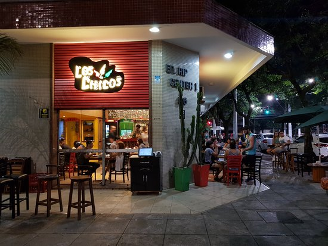
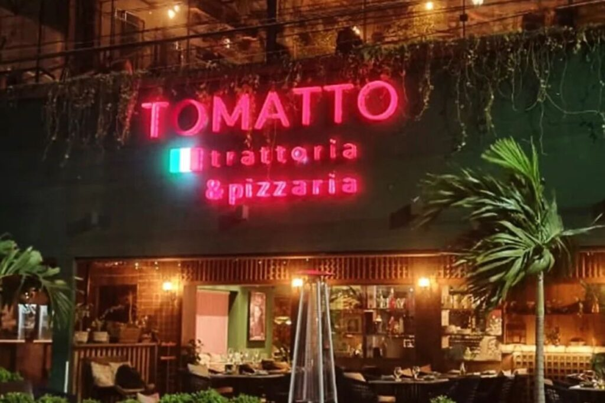
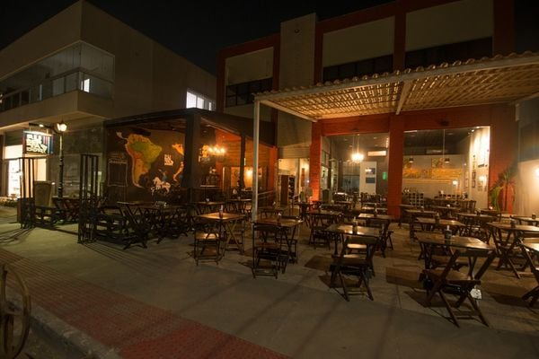

Onde comer bem? Deixamos nossas impressões sinceras sobre os estabelecimentos que visitamos, analisando ambiente, serviço e, claro, a comida!
Crítica: "Los Chicos" (Vitória - Mata da Praia)
Sem dúvidas o melhor restaurante de comida mexicana na Grande Vitória, com pratos fartos e saborosos, além de drinks saborosos e ótimo atendimento e rapidez.
Veredito: ★★★★★ - Excelente comida, e serviço muito rápido mesmo no horário de pico. Vale a visita pela autenticidade dos pratos.

Crítica: "Tomatto Trattoria" (Vitória - Praia do Canto)
Ambiente bonito e matéria prima de qualidade, mas a comida não é compatível com a beleza do local
Veredito: ★★★☆☆ - Um pouco decepcionante. Equipe educada, ótima localização e ambiente bonito. Esquecível.

Crítica: "El Libertador" (Vitória - Mata da Praia)
Uma verdadeira imersão na culinária dos nossos vizinhos da América do Sul. Este restaurante familiar e com música ao vivo surpreende com carnes espetaculares e drinks refrescantes que dão água na boca de lembrar.
Veredito: ★★★★★ - Uma surpresa pouco conhecida. Comida farta, saborosa e com preço justo. Imperdível.
